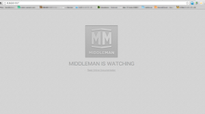

リモートインターン ｜ MIddleman 事始め
今回はMiddlemanを学習していきました。
Middleman とは モダンな web 開発環境のすべてのショートカットやツールを使用して静的 web サイトを作成するためのコマンドラインツールです。（コピペ） 詳しくは下記参照 http://middlemanapp.com/ http://middleman-guides.e2esound.com/
以下、手順
1.middlemanをインストール
$ gem install middleman
2.プロジェクトのスケルトンを作成
$ middleman init [project-name]
生成されるプロジェクトツリー
first-middleman
├── .bundle/
│ └── config
├── .gitignore
├── Gemfile
├── Gemfile.lock
├── config.rb
└── source/
├── images/
│ ├── background.png
│ └── middleman.png
├── index.html.erb
├── javascripts/
│ └── all.js
├── layouts/
│ └── layout.erb
└── stylesheets/
├── all.css
└── normalize.css
3.サーバーの起動
$ cd [project-name]
$ middleman server
middleman単独でもいける。
$ middleman
4.ブラウザでhttp://0.0.0.0:4567へアクセス  こんな感じに表示される。
{kind=link}
5.ビルド
$ cd [project-name]
$ middleman build
ビルド後のproject-tree
first-middleman
├── .bundle/
│ └── config
├── .gitignore
├── Gemfile
├── Gemfile.lock
├── build/
│ ├── images/
│ │ ├── background.png
│ │ └── middleman.png
│ ├── index.html
│ ├── javascripts/
│ │ └── all.js
│ └── stylesheets/
│ ├── all.css
│ └── normalize.css
├── config.rb
└── source/
├── images/
│ ├── background.png
│ └── middleman.png
├── index.html.erb
├── javascripts/
│ └── all.js
├── layouts/
│ └── layout.erb
└── stylesheets/
├── all.css
└── normalize.css
一度buildしてserver起動している状態で、source内のファイルの変更は即適用されるようだ。
middlemanでブログを作る方法
1.Gemfileでgemを指定して
gem "middleman-blog", "~>3.1.1"
bundle installする。
$ bundle install
若しくは、単独でgem install
$ gem install middleman-blog
次に, config.rb で拡張を有効化する。
activate :blog do |blog|
# ブログ機能のオプションを設定
end
2.initするときに最初っからブログテンプレートをつけてしまう。
$ middleman init [project-name] --template=blog
生成されるブログはこんな感じ。
{kind=link}
ブログの記事について source直下に、下記のような名前でマークダウン形式のファイルが生成される。 /source/2012-01-01-example-article.html.markdown ファイルの置き場が気持ち悪い場合は、config.rbの下記の箇所のコメントアウトを外す。
# blog.prefix = "blog"
/source/blog/のようにsourceの下にblogのディレクトリを作って、先ほどのマークダウンのファイルを格納するだけでいい。
Compass & Sass について middleman initするだけでcompassもsassもインストールされる。 気をつけるのはsassファイルの置き場と拡張子だけ。 /source/stylesheets/の下にstyle.css.sassのようなファイル名で配置してあげると良い。 compass使う場合も、sassファイルの先頭で@import compassを宣言するのみなので、通常通り。
LiveReload
LiveReloadは便利なやつ。css編集して保存するとブラウザで変更箇所がオートリロードしてくれるので素敵。（sassで書いた場合はbuildしないと駄目だけど。→リンクヘルパー使えばいけるか？後ほど検証します。→検証しました。）
blogの時と同様に、Gemfileでgemを指定してbundle installする。
gem "middleman-livereload", "~>3.0.1"
$ bundle install
config.rbで下記を記述し有効化する。
activate :livereload
あとはブラウザにLiveReloadのextentionを入れておけばOK。 最後に、サーバーを再起動してブラウザを見ながらエディタでcssなどを編集してLiveReloadを体感する。
今日はここまで。長くなったので記事分割した方が良かった気がする。 一番よくわかってないerb周りのことは後回しにしてしまったので、次回そのあたりを学習します。